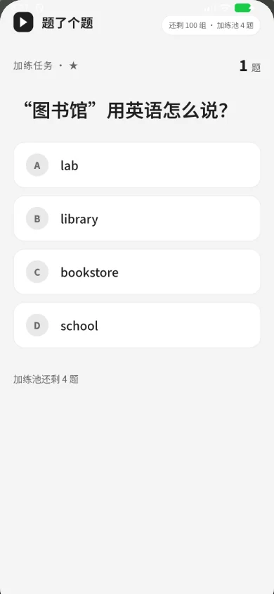
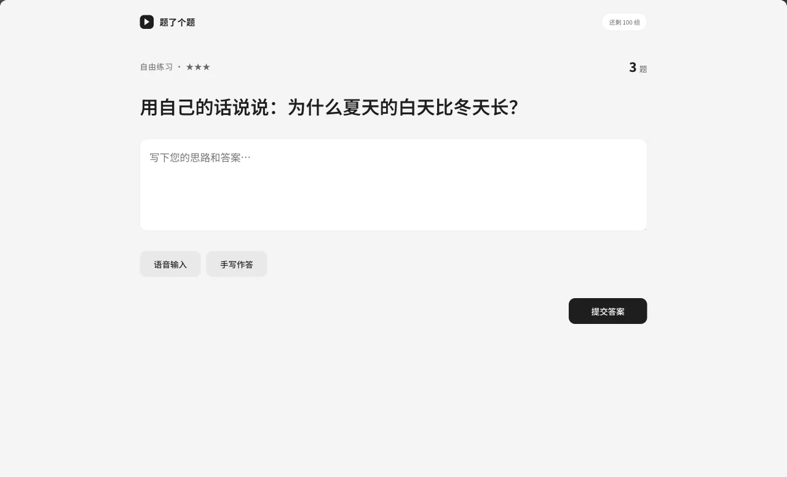
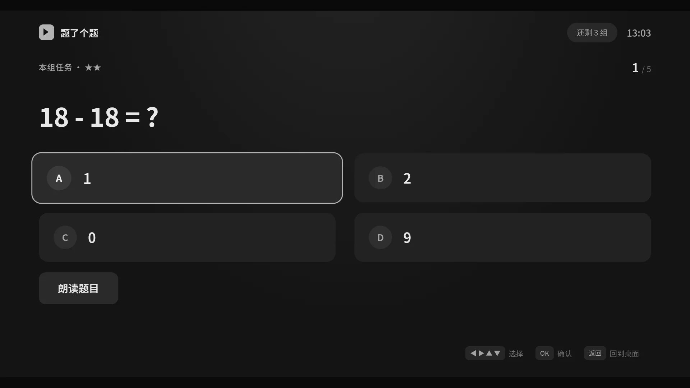
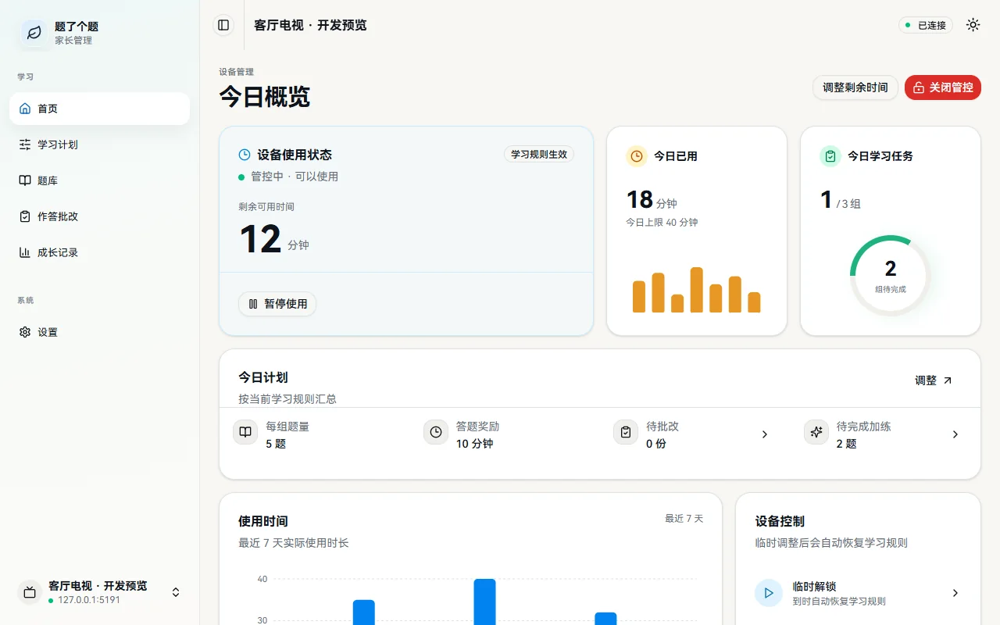
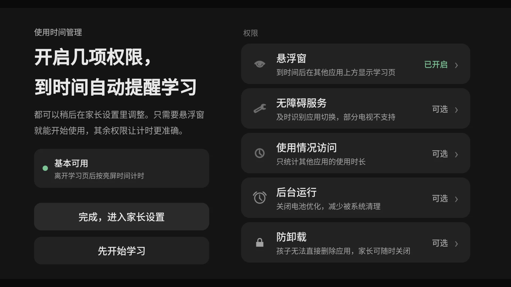

0
项目云端
没有项目账号或自建云端。题库、规则和使用记录保存在被控设备。





为什么做这个
题了个题把学习任务、使用上限和家长面板放在同一台设备上。规则提前说清楚，孩子也能看到自己的进度。
在线体验
这是 TV 端界面的浏览器复刻，不是视频。用方向键、屏幕遥控器或直接点选项，都能完成一轮。
42 - 26 = ?
TV 端界面浏览器复刻
3 道内置算术题。答完看看能得几分钟。
开始后，方向键和 Enter 才会接管页面。
答对了
正确答案：16
答案是 16。
演示设定 三题全对解锁 10 分钟；实际题量、正确率和奖励时长由家长设置。
产品事实
该有的题型、玩法和管控都在。每一块都对应学习或管理里的一个具体时刻。
0
没有项目账号或自建云端。题库、规则和使用记录保存在被控设备。
5
单选、多选、判断、填空、主观题；题干和选项支持 LaTeX 公式，离线也能显示。
Android 5.0+
电视、平板和手机。TV 版与手机/平板版分开安装，规则可以按设备分别设置。
3
下载对应 APK → 设置管理密码 → 同一 WiFi 扫码进家长面板。
可以按设备条件开启悬浮窗或无障碍，并允许后台运行。系统强制停止应用、撤销权限或卸载会影响管控；重新打开后可以在家长设置中调整权限。
已接入 Android 开机与部分快速开机广播。请先打开 App 完成首次设置，并按厂商要求允许自启动、后台运行。小米等电视的遥控器待机、厂商清后台未必发送开机广播，需要在实际设备上验证，详见安装指南。
Android 5.0+ 的平板、手机和电视。厂商后台限制需要在实际设备上确认，鸿蒙 NEXT / Tizen / webOS 待支持。
题库和记录保存在被控设备。开启 AI 批改后，题目和答案会发送到家长配置的服务；项目中已有的第三方统计配置另见统计说明。
题库可以在手机管理页导出 JSON，换电视后重新导入。